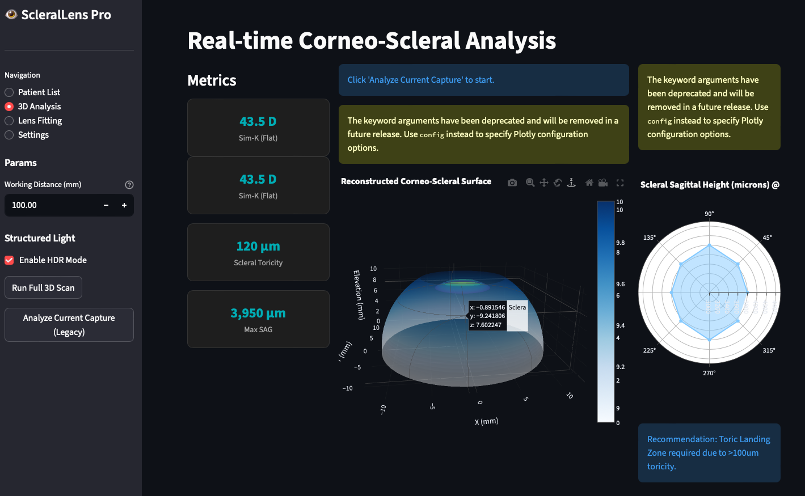

Core Capabilities
Sec. A세 가지 축으로 연구합니다
01
정밀 광학 계측 Precision Optics적외선 구조화광(Structured Light) 및 고속 ROI 추적 시스템을 통해 각공막의 3D 형상부터 동공의 미세한 떨림까지 마이크로 단위의 초정밀 데이터를 포착합니다.
02
AI 바이오마커 분석 AI Analysis수집된 시각 데이터를 독자적인 딥러닝 모델로 해석하여, 퇴행성 뇌질환 및 안구 병변의 징후를 조기에 탐지하는 비침습적 디지털 바이오마커를 연구합니다.
03
맞춤형 시각 솔루션 Vision Solution개인별 안구 광학 스펙트럼과 라이프스타일 데이터를 통합 분석하여, 4D 근시 제어 및 개인맞춤형 시각 재활(Vision Rehabilitation) 솔루션을 제공합니다.
What We Study
Sec. B연구 분야
4D 근시 제어 기술
 Fig. 01 — Optical Ray-Tracing Simulation
Fig. 01 — Optical Ray-Tracing Simulation
주변부 망막 프로파일 및 안매체 경계면에서의 굴절을 고려한 초정밀 광선 추적 시뮬레이션을 통해, 개인별 최적화된 차세대 4D 근시 제어 기술을 연구합니다.
AI 질환 예측 및 진단
 Fig. 02 — Biomarker Correlation Matrix
Fig. 02 — Biomarker Correlation Matrix
망막 혈관 구조, 사시각 편차, 눈꺼풀 처짐(Ptosis), 동공 반응 등 다차원 안구 생체 신호를 통합 분석하여 전신 질환의 발병 확률을 예측하는 AI 시스템을 개발합니다.
초정밀 각공막 3D 재구성

Fig. 03 — Real-time Corneo-Scleral Analysis각막과 공막의 3D 프로파일을 정밀 계측 및 재구성하여, 맞춤형 공막 렌즈 처방과 인공 각막 제작을 위한 핵심 형상 데이터베이스를 구축합니다.
● Partnership
연구 데이터가 증명하는 기술,
함께할 파트너를 찾습니다
바이어·스폰서를 위한 기술 소개 자료와 연구 성과 데이터를 제공합니다. 협업, 투자, 라이선스 문의를 환영합니다.